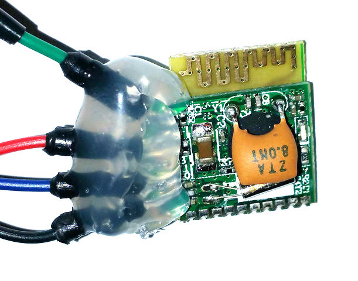

Cosplay electronics
Making reliable lighting
Content stolen and presented by Kataku Cosplay
Why is this talk so long?
Just tape an led to a 3v button cell!
http://www.thinkcreate.org/index.php/origami-balloon-mood-light/
Doesn't scale well
Just buy it on ebay
you can say you made it later
Can't find anything good?
Still here?
What we're gonna cover
What you need (some cost)
The basics
Designing a circuit (some math)
Actually making it all work (some swearing)
Lets buy some kit!
There's some stuff we're going to need
There's some stuff it's going to be nice to have.
You Need
A cutting tool
A Soldering Iron
Solder
Something your soldering iron can't burn*
*I literally use a kitchen tile off cut
I'd also recommend
Soldering iron stand
Heat shrink
A multimeter
Folks will gladly sell you a kit for very little, E.G
src: https://www.amazon.co.uk/
Using a soldering iron
Just the tip
Get the iron hot so the pad steams... and clean it on the pad
src: https://www.instructables.com/id/Soldering-101%253a-Lesson-1%253a-Tin-the-Tip/
It should be shiny, if it's pitted it needs replacing
src: https://www.instructables.com/id/Soldering-101%253a-Lesson-1%253a-Tin-the-Tip/
try to get a thin layer on the iron tip
src: https://www.instructables.com/id/Soldering-101%253a-Lesson-1%253a-Tin-the-Tip/
If your iron is hot enough the solder will flow around the tip

src: https://www.instructables.com/id/Soldering-101%253a-Lesson-1%253a-Tin-the-Tip/
src: https://learn.adafruit.com/assets/19373
That's tinning the tip.
Solder helps conduct heat evenly and quickly
If you do this when you start soldering things will be easier for you.
You also won't have to hold the iron to stuff for as long so it won't burn stuff
You heat up the wire THEN melt the solder onto the wire
If you touch the solder to the iron, it will stick to the iron
It should flow over the wire and go all smooth and shiny
src: https://learn.adafruit.com/assets/19373
Don’t melt solder on the iron and then wipe it on the parts
Regularly clean and re-tin the tip of your iron
Blowing on a join makes it brittle, let it cool naturally
src: https://www.instructables.com/id/Soldering-101%253a-Lesson-1%253a-Tin-the-Tip/
Flux
Going to steal from here now
Flux
As cleaning agents, fluxes facilitate soldering, brazing, and welding by removing oxidation from the metals to be joined... By preventing the formation of metal oxides, flux enables the solder to adhere to the clean metal surface, rather than forming beads, as it would on an oxidized surface.
Flux
TL;DR Gloop to help solder stick
Smear on things to solder
Expect fizzing and fumes when soldering with flux
Use when solder forms beads and won't flow onto a thing
You can also gently rough a surface with sandpaper then use flux if it just won't take
Braid
Going to steal from here now
Braid
Desoldering braid, also known as desoldering wick or solder wick, is finely braided 18 to 42 AWG copper wire coated with rosin flux, usually supplied on a roll.
The end of a length of braid is placed over the soldered connections of a component being removed. The connections are heated with a soldering iron until the solder melts and is wicked into the braid by capillary action. The braid is removed while the solder is still molten, its used section cut off and discarded when cool. Short lengths of cut braid will prevent heat being carried away by the braid instead of heating the joint.
Braid
TL;DR copper rope to stick solder to
Get some flux on it and press it to the solder with a very hot iron on the other side
When the solder wicks onto the braid remove it with the iron still keeping the braid hot
Making a decent electrical connection
Stripping Wires
Splicing wires
Insulation and strain relief
Stripping Wires
Press gently feeling the resistance difference to stop at the core
src: https://www.instructables.com/id/Strip-and-Tin-Wires-Like-a-Pro/
Push the cutters up with your thumb
src: https://www.instructables.com/id/Strip-and-Tin-Wires-Like-a-Pro/
Leave the insulation on for now
src: https://www.instructables.com/id/Strip-and-Tin-Wires-Like-a-Pro/
Use it like a handle on the braids
src: https://www.instructables.com/id/Strip-and-Tin-Wires-Like-a-Pro/
Pro-tip: Twist braids
src: https://www.instructables.com/id/Strip-and-Tin-Wires-Like-a-Pro/
Splicing Wires
Have two stripped wires, yeah, good start
src: https://www.instructables.com/id/Soldering-Tutorial-Inline-Splicing/
If your going to use heatshrink now's the time
src: https://www.rcgroups.com/forums/showthread.php?1913624-How-to-securely-splice-a-wire
Interweave them
src: https://www.instructables.com/id/Soldering-Tutorial-Inline-Splicing/
Twist
src: https://www.instructables.com/id/Soldering-Tutorial-Inline-Splicing/
Then... no, NO!
src: https://www.instructables.com/id/Soldering-Tutorial-Inline-Splicing/
Ah... better
src: https://www.instructables.com/id/Soldering-Tutorial-Inline-Splicing/
Now you have a bare exposed connection!
src: https://www.instructables.com/id/Soldering-Tutorial-Inline-Splicing/
This also works
src: https://www.youtube.com/watch?v=Zu3TYBs65FM
But avoid doing this..
A pigtail splice is weaker if pulled on
src: https://learn.adafruit.com/assets/19480
Insulation and strain relief
Heat shrink
Electrical tape works best taut and sticking to its self
Use heatshrink where you can
You can get a kit with all different sizes
src: https://www.amazon.co.uk/
So ifixit use a caliper...
src: https://www.ifixit.com/Guide/How+to+Use+Heat+Shrink+Tubing/64041
you can just grab the heatshrink that fits over your wire
It will say the amount it shrinks but normally 2:1
src: https://learn.sparkfun.com/tutorials/working-with-wire/how-to-splice-wires
Don't forget to slide it over joins before you start
Move it as far from the soldering work as possible
src: https://www.rcgroups.com/forums/showthread.php?1913624-How-to-securely-splice-a-wire
Heatshrink is cheap but doesn't bend easily once on
So you want to overlap the insulation but not go nuts
src: https://www.ifixit.com/Guide/How+to+Use+Heat+Shrink+Tubing/64041
You can cut heatshrink with regular scissors
src: https://www.ifixit.com/Guide/How+to+Use+Heat+Shrink+Tubing/64041
They use a heat gun, you can use a hairdryer
src: https://www.ifixit.com/Guide/How+to+Use+Heat+Shrink+Tubing/64041
I use a soldering iron, like a monster
src: https://learn.sparkfun.com/tutorials/working-with-wire/how-to-splice-wires
Utter reprobates use lighters, they are the worst of all
src: http://www.fuelinjectedford.com/page7.html
Move the heat around the whole join to shrink it all and don't burn it
src: https://www.ifixit.com/Guide/How+to+Use+Heat+Shrink+Tubing/64041
Varnish
These wires are coated in varnish so they don't short
Resin, plastidip or clear nail varnish will keep water out
Especially relevant if its close to sweating skin
hot melt glue
You can use it to relieve strain
You can pot components within it
hot melt glue
Potting something in glue
Wait for gun to fully warm so glue flows nicely around stuff
Do it all in one go without letting it cool so its continuous
Test the circuit doesn't overheat / melt the glue when potted
hot melt glue
Strain Relief
You want the glue to have to break before your solder join
Designing a circuit
OHM's LAW
OHM's LAW
V = I × R
V is the voltage, I is the current, and R is the resistance
This is how you work out what resistor you need
When you want to use a larger battery than a button cell
And have your leds keep working
Going to use the water analogy...
V - Voltage - Water Pressure
I - Current - Volume of Water that Flows
R - Resistance - Narrowness of the Pipe
LEDs 'use' voltage; the voltage is lower after the LED.
This will be listed as Vf (forward voltage) in the LED specification
They work this out for running the LED at 20 milliamps (mA), i.e., 0.020 amps (A)
It varies a lot by colour and a little even within colour
For reference
src: http://www.iteezone.com/
If V = I × R Then V / I = R
We have a 9V battery, Vf 2.2 and our LED likes 20 mA so...
6.8 V / 0.020 A = 340 Ω
src: https://learn.adafruit.com/assets/3904
What if we don't use a resistor?
V / R = I ?
LEDs resistance is complicated, we'll approx 15 Ω
src: http://lednique.com/current-voltage-relationships/resistance-of-an-led/
9 V / 15 Ω = 0.6 A
9 V / 600* mA through a commponent that wanted 2.2v and 20 mA
Your LED will be really bright then immediately very dead
So why does this work?
Because batteries can only supply so much current
Coin cells are tiny, so you get away with this
http://www.thinkcreate.org/index.php/origami-balloon-mood-light/
There are calcuators online
http://www.ohmslawcalculator.com/led-resistor-calculator
src: http://www.ohmslawcalculator.com/led-resistor-calculator
Fragments
Hit the next arrow...
... to step through ...
... a fragmented slide.
Fragment Styles
There's different types of fragments, like:
grow
shrink
fade-out
fade-up (also down, left and right!)
current-visible
Highlight red blue green
Transition Styles
You can select from different transitions, like:
None -
Fade -
Slide -
Convex -
Concave -
Zoom
Themes
reveal.js comes with a few themes built in:
Black (default) -
White -
League -
Sky -
Beige -
Simple
Serif -
Blood -
Night -
Moon -
Solarized
Slide Backgrounds
Set data-background="#dddddd" on a slide to change the background color. All CSS color formats are supported.
Image Backgrounds
<section data-background="image.png">Tiled Backgrounds
<section data-background="image.png" data-background-repeat="repeat" data-background-size="100px">Video Backgrounds
<section data-background-video="video.mp4,video.webm">... and GIFs!
Background Transitions
Different background transitions are available via the backgroundTransition option. This one's called "zoom".
Reveal.configure({ backgroundTransition: 'zoom' })Background Transitions
You can override background transitions per-slide.
<section data-background-transition="zoom">Pretty Code
function linkify( selector ) {
if( supports3DTransforms ) {
var nodes = document.querySelectorAll( selector );
for( var i = 0, len = nodes.length; i < len; i++ ) {
var node = nodes[i];
if( !node.className ) {
node.className += ' roll';
}
}
}
}
Code syntax highlighting courtesy of highlight.js.
Marvelous List
- No order here
- Or here
- Or here
- Or here
Fantastic Ordered List
- One is smaller than...
- Two is smaller than...
- Three!
Tabular Tables
| Item | Value | Quantity |
|---|---|---|
| Apples | $1 | 7 |
| Lemonade | $2 | 18 |
| Bread | $3 | 2 |
Clever Quotes
These guys come in two forms, inline:
“The nice thing about standards is that there are so many to choose from”
and block:
“For years there has been a theory that millions of monkeys typing at random on millions of typewriters would reproduce the entire works of Shakespeare. The Internet has proven this theory to be untrue.”
Intergalactic Interconnections
You can link between slides internally, like this.
Speaker View
There's a speaker view. It includes a timer, preview of the upcoming slide as well as your speaker notes.
Press the S key to try it out.
Export to PDF
Presentations can be exported to PDF, here's an example:
Global State
Set data-state="something" on a slide and "something"
will be added as a class to the document element when the slide is open. This lets you
apply broader style changes, like switching the page background.
State Events
Additionally custom events can be triggered on a per slide basis by binding to the data-state name.
Reveal.addEventListener( 'customevent', function() {
console.log( '"customevent" has fired' );
} );
Take a Moment
Press B or . on your keyboard to pause the presentation. This is helpful when you're on stage and want to take distracting slides off the screen.
Much more
- Right-to-left support
- Extensive JavaScript API
- Auto-progression
- Parallax backgrounds
- Custom keyboard bindings